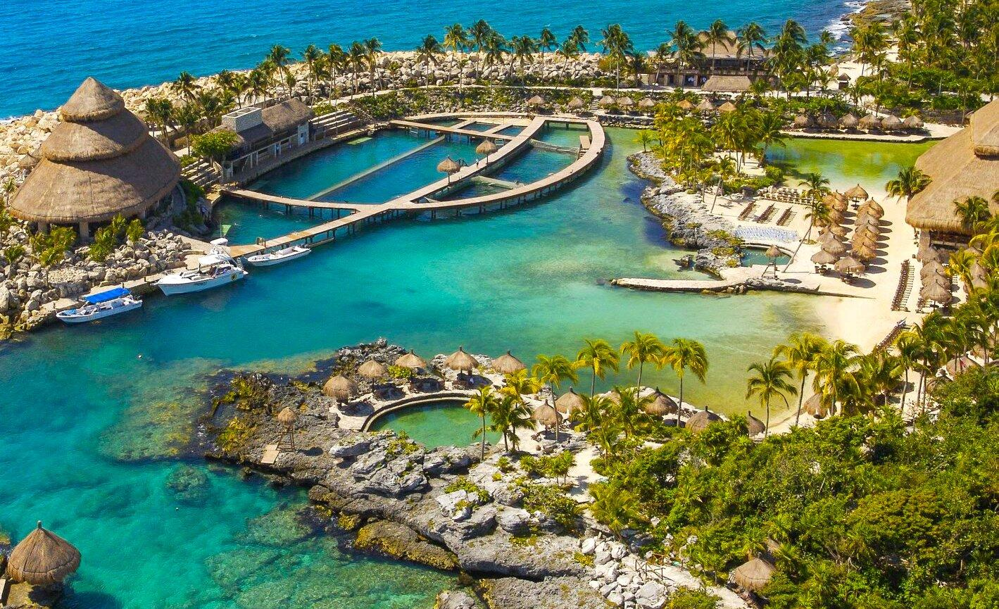
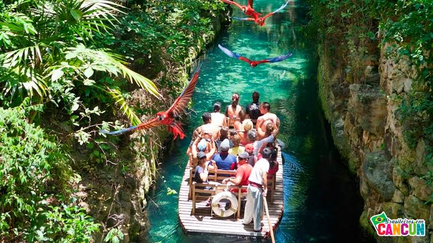

Pontos Turísticos - Xcaret Park
O Xcaret Park é um parque temático, resort e empreendimento de ecoturismo de propriedade e operação privada, localizado na Riviera Maya, uma parte da costa caribenha do estado mexicano de Quintana Roo.

